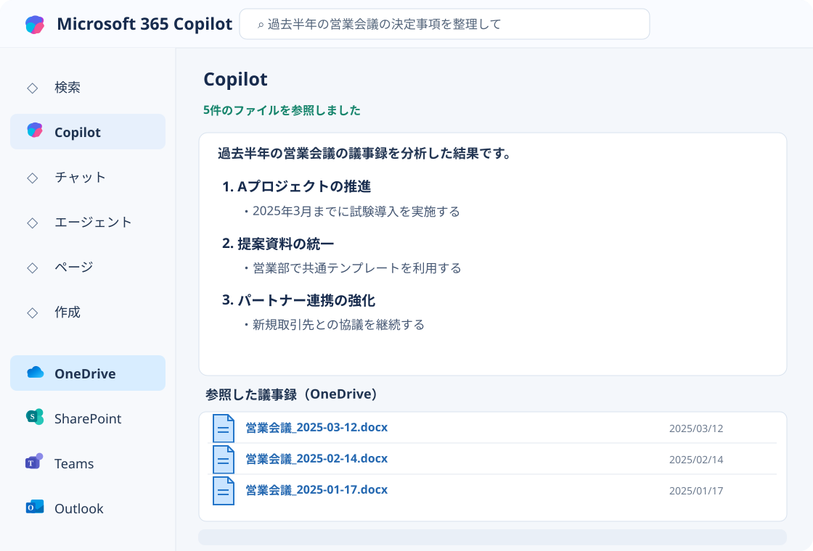
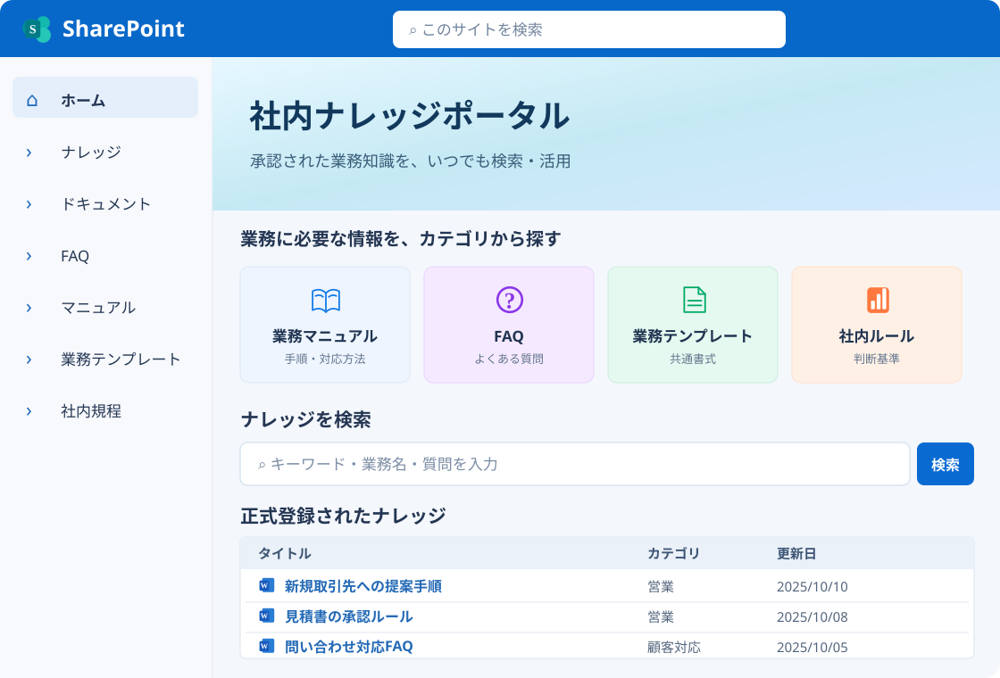

01情報検索・活用支援
今ある情報を、もっと便利に使う。
Microsoft 365 Copilotを活用し、会議の議事録や社内資料など、蓄積された情報を日常業務で活用できるよう支援します。
- Teams会議の議事録作成・要約・タスク整理
- OneDriveに蓄積した議事録の横断検索・分析
- 業務に合わせたCopilotの活用方法の設計・研修
期待できる成果
- 過去の会議の決定事項や経緯をすばやく確認
- 議事録作成・情報検索の負担を軽減
活用例｜過去の議事録を、Copilotで横断分析。
Teams会議の議事録をOneDriveに蓄積。「この半年の営業会議で決まった重要事項は？」とCopilotに質問し、複数の議事録を横断して決定事項や未完了タスクを整理します。

Copilotの画面イメージ（架空のサンプル）使用ツール：Microsoft 365 Copilot・Teams・OneDrive・SharePoint
02ナレッジ構築・活用支援
社内の知識を、組織の資産に変える。
SharePointを中心に、正式な社内ナレッジを整理・蓄積し、誰もが必要な情報を見つけて活用できる環境を構築します。
- SharePointによる社内ナレッジポータルの構築
- 情報整理・検索環境の改善（正式ナレッジの管理、ドキュメントへのメタデータ付与）
- Teamsの会話や既存資料からのナレッジ抽出・確認・正式登録
- Power Automateによる蓄積・更新業務の自動化
- ナレッジの更新・管理ルールの設計
期待できる成果
- 必要な情報をすぐに見つけられる環境を整備
- 同じ質問や確認作業を減らし、知識を継承
活用例｜正式な社内ナレッジを一か所に。
業務マニュアル、FAQ、社内ルール、判断基準など、担当者が確認した正式な情報をSharePointのナレッジポータルに集約。カテゴリや更新日を整理し、社員が検索・参照できるようにします。

SharePointの画面イメージ（架空のサンプル）使用ツール：Microsoft 365 Copilot・Teams・SharePoint・Power Automate